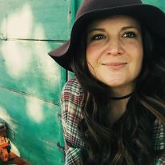

Here's a photo of my crew.

I am a student in Environmental Science and GIS at MSU Denver . I want to make the world a better place
through my work as a scientist, an artist, and a poet.
| Fall 2021 | Spring 2022 |
|---|---|
| Web Mapping | Statistics |
| Global Environmental Challenges | GIS undetermined |
| Cultural Anthropology | GIS undetermined |
One of my favorite quotes is by Russian geologist Vladamir Verdnasky. In describing life and the biosphere as simply a large circular exchange of chemicals and matter, he stated,
"Living matter is a specific kind of rock...an ancient, and at the same time, an eternally young rock. The purpose of animals and their movement is to assist the winds and waves, to stir the brewing biosphere."
Here's a photo of my crew.
And here's a photo of me working at the Boggsville Historic Site
To commiserate over the state of the world, email me at emathew3@msudenver.edu
For my GitHub repositories, please visit Lizish's GitHub